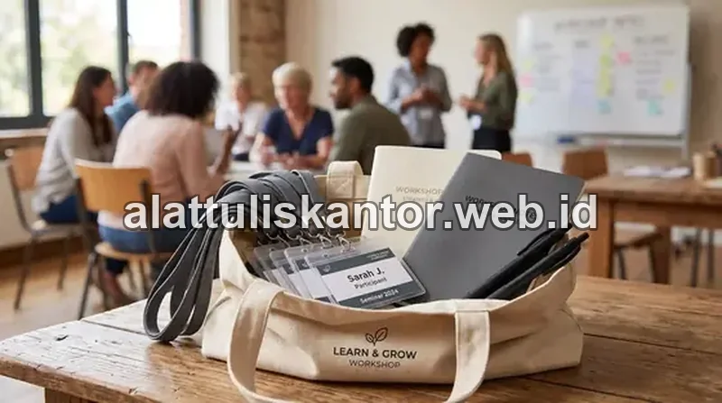

Kesan pertama saat klien penting memasuki ruang rapat sering kali ditentukan oleh detail-detail kecil yang mudah terlewat: meja rapat yang rapi, alat tulis yang tertata, hingga dokumen presentasi yang tercetak sempurna tanpa noda atau kertas kusut akibat printer bermasalah.
Sayangnya, momen krusial seperti ini justru sering terganggu oleh hal teknis yang seharusnya bisa dicegah, seperti printer kantor yang tiba-tiba macet akibat kertas lembap saat sedang mencetak materi presentasi terakhir menjelang meeting dimulai. Artikel ini membahas cara menata paket atk kantor untuk meja rapat yang profesional, sekaligus tips mencegah gangguan teknis printer di saat-saat genting.
1. Apa Saja Peralatan Meja Rapat yang Wajib Ada untuk Menyambut Klien Penting?
Peralatan meja rapat profesional yang wajib tersedia mencakup notepad atau writing pad dengan desain rapi untuk setiap peserta, pulpen berkualitas dengan tinta lancar, air mineral atau gelas bersih, kartu nama holder, serta dokumen presentasi yang telah dicetak dengan kualitas terbaik tanpa risiko kertas macet atau hasil cetak buram di menit-menit terakhir.
Catatan Kunci: Detail sekecil apa pun pada meja rapat mencerminkan profesionalisme perusahaan di mata klien, sehingga persiapannya tidak boleh dianggap remeh atau dilakukan secara terburu-buru.
2. Daftar Lengkap Perlengkapan Meja Rapat Profesional
Untuk memastikan seluruh kebutuhan meeting terpenuhi tanpa ada yang terlewat, berikut rincian pembagian perlengkapan meja rapat berdasarkan fungsinya:
1. Perlengkapan Tulis untuk Setiap Peserta
- Notepad atau writing pad: Sebaiknya dilengkapi logo perusahaan (bila tersedia) untuk memberikan sentuhan identitas merek yang eksklusif dan tertata.
- Pulpen berkualitas dengan tinta gel lancar: Dipilih dari merek yang teruji tidak mudah macet, tidak bocor, dan nyaman digenggam untuk penandatanganan kesepakatan.
- Sticky notes: Berguna bagi peserta untuk menandai poin-poin krusial atau mencatat ide cepat tanpa mengganggu alur jalannya diskusi.
2. Dokumen dan Materi Presentasi
- Print out materi presentasi: Dicetak di atas kertas HVS berkualitas tinggi bebas noda, garis buram, maupun lipatan kertas.
- Map atau folder khusus: Menyusun proposal, company profile, dan dokumen lampiran agar tampak rapi dan mudah dibagikan kepada jajaran pengambil keputusan klien.
- Kartu nama dan brosur perusahaan: Tersusun presisi di dekat area tempat duduk perwakilan klien untuk mempermudah komunikasi lanjutan.
3. Kelengkapan Pendukung Ruang Rapat
- Air mineral & gelas bersih: Kemasan higienis yang disiapkan sebelum tamu memasuki ruangan.
- Remote control proyektor / display controller: Dipastikan dalam kondisi baterai penuh dengan pointer laser yang berfungsi normal.
- Jam meja atau pengatur waktu diskusi: Membantu moderator mengontrol durasi agenda agar meeting selesai tepat waktu sesuai rundown.
3. Mengapa Printer Kantor Sering Macet Akibat Kertas Lembap Saat Dibutuhkan Mendesak?
Momen paling tidak diinginkan adalah saat printer tiba-tiba mengalami paper jam (macet) ketika mencetak dokumen presentasi menit-menit terakhir sebelum klien tiba. Penyebab paling umum dari masalah ini adalah kondisi kertas yang lembap akibat penyimpanan yang kurang tepat, bukan kerusakan mesin printer itu sendiri.
Kertas yang menyerap kelembapan udara ruangan ber-AC atau ruang penyimpanan yang lembap akan mengalami perubahan struktur serat. Lembaran kertas menjadi melengkung, menggelembung mikro, dan saling menempel. Akibatnya, roller penarik printer gagal menarik satu lembar secara presisi, memicu penarikan ganda yang berujung pada macetnya printer di tengah proses cetak massal.
4. Tips Memastikan Kertas Siap Pakai Tanpa Risiko Macet Saat Rapat Penting
- Simpan kertas presentasi di rak khusus: Pisahkan stok kertas HVS premium untuk dokumen eksternal di dalam wadah tertutup kedap udara atau kabinet kering.
- Cetak dokumen minimal H-1 (sehari sebelumnya): Hindari kebiasaan mencetak 15 menit sebelum rapat agar tim memiliki ruang mitigasi bila terjadi kendala toner atau kertas.
- Gunakan gramatur yang presisi: Pilih kertas dengan gramatur 80 gsm atau lebih tebal untuk materi proposal bisnis agar tidak mudah bergelombang terkena panas fuser printer laser.
- Siapkan cadangan kertas kering di ruang terpisah: Selalu simpan rim cadangan dalam kemasan pembungkus asli pabrik yang belum dibuka sebagai stok darurat.
5. Tabel Checklist Persiapan Meja Rapat Sebelum Klien Tiba
Gunakan tabel panduan waktu berikut untuk memastikan seluruh persiapan ruang rapat berjalan sistematis:
| Waktu Sebelum Rapat | Hal yang Perlu Dicek & Dikerjakan |
|---|---|
| H-1 (Sehari Sebelumnya) | Cetak seluruh dokumen presentasi, cek kondisi kertas, susun berkas ke dalam folder, siapkan notepad & pulpen gel cadangan. |
| H-2 Jam | Bersihkan permukaan meja rapat, susun dokumen materi di setiap kursi, tata kartu nama holder, uji coba proyektor/layar presentasi. |
| H-30 Menit | Siapkan air mineral dan gelas bersih, nyalakan AC ruangan pada suhu nyaman (22-24°C), pastikan pencahayaan optimal. |
| H-10 Menit | Cek ulang kelengkapan alat tulis di setiap posisi kursi peserta, pastikan printer dalam status standby tanpa antrean cetak error. |
6. Mengapa Detail Kecil Meja Rapat Mempengaruhi Kesan Profesionalisme?
Klien penting sering kali menilai kesiapan dan kredibilitas perusahaan bukan hanya dari materi presentasi yang dipaparkan, tetapi juga dari bagaimana detail-detail kecil dikelola di dalam ruangan.
Meja rapat yang tertata rapi dengan alat tulis berkualitas, dokumen yang tercetak sempurna tanpa cacat, dan ketiadaan gangguan teknis di tengah pertemuan mencerminkan budaya kerja yang terorganisir, disiplin, dan menghargai waktu mitra bisnis. Hal ini membangun rasa percaya sebelum presentasi dimulai.
Studi Kasus: Kesan Profesional yang Menyelamatkan Negosiasi Penting
Sebuah perusahaan jasa konsultan pernah menceritakan pengalaman saat rapat presentasi proposal bernilai besar dengan calon klien korporat multinasional. Materi presentasi sempat tercetak buram akibat kertas yang kurang optimal, namun karena dokumen sudah dicetak sehari sebelumnya sebagai cadangan, tim masih sempat mencetak ulang dengan kertas segar tanpa mengganggu jadwal rapat.
Klien yang hadir bahkan memuji kerapian dan kesiapan tim dalam menyambut kedatangan mereka, mulai dari notepad personal di setiap tempat duduk hingga dokumen yang tersusun rapi dalam folder bermerek perusahaan. Detail kecil seperti ini pada akhirnya turut berkontribusi besar pada keputusan klien untuk menandatangani kontrak kerja sama.
7. Perbedaan Persiapan Meja Rapat Internal vs Rapat dengan Klien Eksternal
Tidak semua rapat membutuhkan tingkat persiapan yang sama. Berikut perbedaan penekanan antara rapat tim internal dan rapat dengan klien penting:
- Rapat internal rutin: Fokus pada fungsi dasar operasional seperti notepad standar, pulpen, spidol whiteboard, dan sticky notes untuk brainstorming cepat tanpa memerlukan folder eksklusif atau kartu nama holder.
- Rapat dengan klien eksternal penting: Memerlukan detail tambahan seperti dokumen presentasi di atas kertas gramatur prima, folder bermerek khusus, pulpen gel berpenampilan elegan, serta kelengkapan penunjang seperti air mineral dan kartu nama yang tertata rapi untuk menciptakan citra profesional yang kuat.
Sebagai supplier atk-kantor yang memahami pentingnya detail kecil dalam mendukung kesan profesional perusahaan, kami menyediakan paket ATK meja rapat lengkap mulai dari alat tulis hingga kertas presentasi berkualitas. Untuk mengenal lebih jauh komitmen layanan dan portofolio produk yang kami tawarkan, silakan kunjungi halaman tentang kami.
8. Kesimpulan
Menata peralatan meja rapat yang profesional bukan sekadar soal estetika visual, tetapi juga soal memastikan tidak ada gangguan teknis seperti printer macet yang bisa merusak kesan pertama di hadapan klien penting. Dengan menerapkan checklist persiapan meja rapat dan memastikan kondisi kertas dalam keadaan prima, perusahaan Anda siap menyambut klien dengan reputasi profesional yang meyakinkan sejak detik pertama pertemuan dimulai.
Ingin memesan paket ATK meja rapat lengkap untuk kebutuhan kantor Anda? Hubungi tim kami via WhatsApp di 0889-8964-3555 untuk konsultasi kebutuhan, kustomisasi paket, dan penawaran harga korporat terbaik.